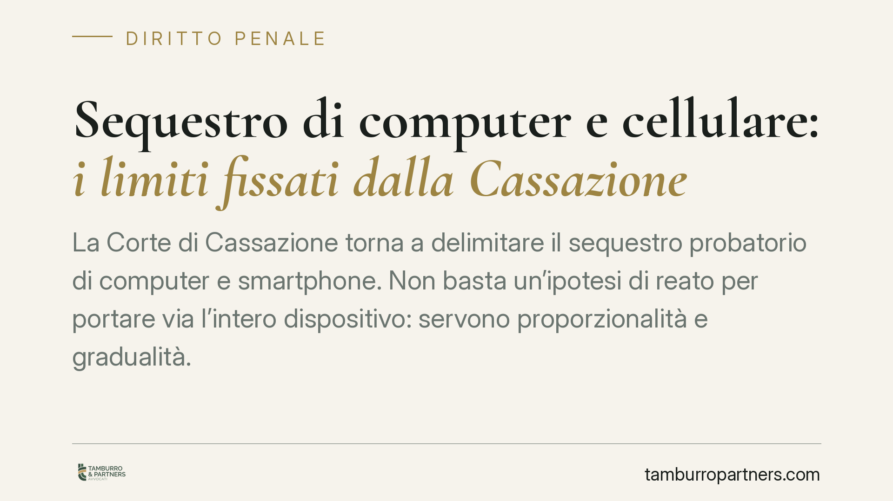

Sequestro di computer e cellulare: i limiti fissati dalla Cassazione
La Corte di Cassazione torna a delimitare il sequestro probatorio di computer e smartphone. Non basta un'ipotesi di reato per portare via l'intero dispositivo: servono proporzionalità e gradualità. I sequestri massivi ed esplorativi, che acquisiscono l'intera memoria senza selezione, restano illegittimi. Ecco cosa cambia per chi subisce il provvedimento.

Il fatto e perché conta
Un cellulare o un computer non sono un semplice oggetto. Contengono anni di conversazioni, foto, dati sanitari, corrispondenza professionale, movimenti bancari. Sequestrarli significa acquisire l'intera vita digitale di una persona.
Proprio per questo la Corte di Cassazione ha costruito nel tempo un orientamento che pone paletti precisi. Il sequestro probatorio di dispositivi informatici non può trasformarsi in una raccolta indiscriminata di dati alla ricerca di un reato ancora da individuare.
Inquadramento normativo
Il sequestro probatorio è disciplinato dall'art. 253 c.p.p.: l'autorità giudiziaria dispone il sequestro del "corpo del reato" e delle "cose pertinenti al reato" necessarie per l'accertamento dei fatti. La parola chiave è *pertinenza*: deve esistere un collegamento concreto tra la cosa sequestrata e l'indagine.
Quando il sequestro è operato di iniziativa dalla polizia giudiziaria, opera l'art. 355 c.p.p., che impone la trasmissione degli atti al pubblico ministero e la successiva convalida. Il provvedimento è poi impugnabile davanti al tribunale del riesame. Distinto è il sequestro preventivo dell'art. 321 c.p.p., che mira a evitare l'aggravamento delle conseguenze del reato.
La Cassazione ha chiarito che il sequestro deve rispettare tre principi tra loro connessi: proporzionalità (il sacrificio imposto deve essere adeguato all'esigenza probatoria), adeguatezza (la misura deve essere idonea allo scopo) e gradualità (occorre scegliere lo strumento meno invasivo). Su questo si innesta anche l'art. 262 c.p.p., che regola la restituzione delle cose sequestrate quando vengono meno le esigenze probatorie.
Il nodo dei sequestri massivi
Il punto critico riguarda la prassi dell'acquisizione integrale della memoria. Spesso il dispositivo viene clonato per intero e i dati restano nella disponibilità dell'accusa a tempo indeterminato.
La giurisprudenza ha definito illegittimi i sequestri "esplorativi": quelli in cui si acquisisce tutto per poi cercare, all'interno della massa di dati, qualcosa di utile. Il sequestro deve essere mirato a materiale già individuato o individuabile in base a criteri di selezione precisi (parole chiave, intervalli temporali, tipologie di file, interlocutori determinati).
Quando l'esigenza probatoria riguarda specifici documenti o conversazioni, il sequestro dell'intero apparecchio è sproporzionato. La regola è: estrarre la copia dei soli dati pertinenti e restituire il dispositivo.
Implicazioni pratiche
Per chi subisce il sequestro cambia molto. Il provvedimento deve essere motivato non solo sull'esistenza del reato, ma anche sulla necessità di acquisire proprio quel dispositivo e su quel perimetro di dati. Una motivazione generica, che si limita a richiamare l'ipotesi di reato, è vulnerabile in sede di riesame.
La restituzione del bene o della sua copia inutile può essere richiesta man mano che l'indagine progredisce. Trattenere l'intera memoria oltre il necessario espone il provvedimento a censura.
Attenzione anche al segreto professionale: se il dispositivo contiene corrispondenza con il difensore o dati coperti da tutela (medici, giornalisti, ministri di culto), valgono garanzie ulteriori che limitano l'utilizzabilità del materiale.
Cosa fare in concreto
- Chiedi e conserva copia del verbale di sequestro: verifica la data, la motivazione e l'indicazione precisa dei beni acquisiti.
- Non fornire spontaneamente password o codici senza prima consultare un difensore: la collaborazione va valutata con attenzione.
- Attiva subito il difensore per il riesame: il termine per impugnare davanti al tribunale è breve e decorre dalla conoscenza del provvedimento.
- Segnala la presenza di dati riservati o coperti da segreto (corrispondenza difensiva, dati professionali) per attivare le tutele previste.
- Monitora i tempi: quando le esigenze probatorie vengono meno, richiedi la restituzione del dispositivo e la distruzione delle copie non pertinenti.
Consigliamo di intervenire tempestivamente: sulla proporzionalità del sequestro si gioca una parte decisiva della difesa, e i termini di impugnazione non ammettono attese.
---
Contributo informativo a cura di Tamburro & Partners - Avv. Giuseppe Tamburro. Non costituisce parere legale.
Ogni condominio ha una storia a sé.
Se gestisci un'amministrazione e vuoi un confronto su una specifica questione condominiale, scrivi allo studio. Ti rispondiamo entro un giorno lavorativo.